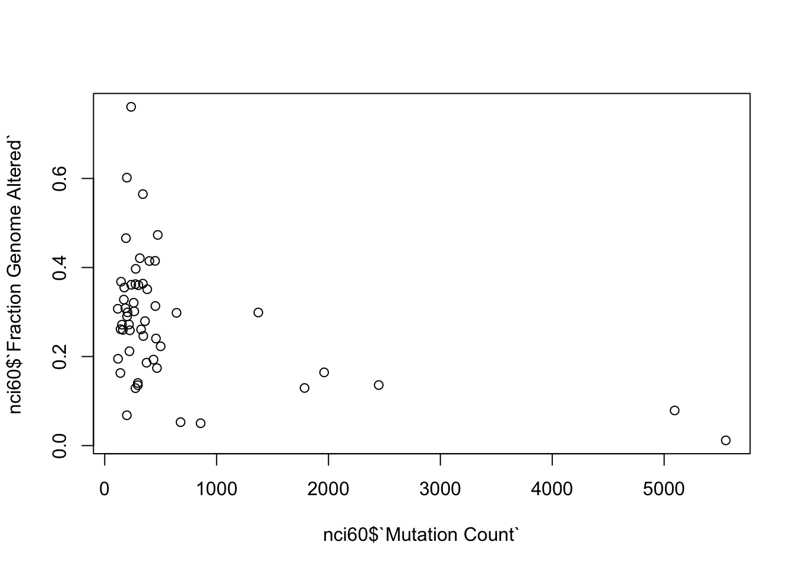

Week 3 - Working with data in R
Learning objectives
- Learn how to install and use packages that extend R’s basic functionality
- Read data in tabular format into R
- Calculate summary statistics on your tabular data
- Introduce the
tibble, arguably the most important data structure you will use in R- Learn how R deals with missing values
- Learn the two key dplyr functions for manipulating your data
filter()for selecting observations based on their values, i.e. selecting rows in your tableselect()for selecting a subset of variables, i.e. selecting columns in your tablearrange()for sorting the observations in your table
Getting started with data in R
In this course, we’ll be mostly focusing on a set of R packages specifically designed for the most useful and common operations for interacting with and visualizing data, and particularly data in a tabular form. This collection of packages is known as the tidyverse.
Learning the tidyverse is more than just learning about some helpful functions to get certain tasks done. The tidyverse packages form a coherent system for data manipulation, exploration and visualization that share a common design philosophy. There is a certain elegance to code crafted using the tidyverse approach that is in stark contrast to the strange and often cryptic equivalent using traditional ‘base R’.
We will also start to look at the most important data structure you’ll use with your data, assuming it is in tabular form, the data frame, and its superior tidyverse derivative, the tibble.
Packages
Before we move on to the tidyverse version of a data frame, the tibble, we need to load the package that provides the tibble functionality. It doesn’t come loaded with R by default.
There are thousands of R packages available, each extending R’s core functionality with specialized functions for various tasks. Some packages provide advanced visualization and plotting functions, others offer tools for data manipulation, and some give access to cutting-edge machine learning algorithms.
To use the functions and datasets from a package, you need to load it
with the library() function. Since the tibble
data structure is part of the tibble package, you can make
it available by running the following command:
library(tibble)The tibble package also contains various useful
functions for converting other data structures, such as data frames, to
tibbles and for working with tibble objects.
The tibble package is part of the collection of packages that make up the tidyverse. It is usually more convenient to load the core tidyverse packages all at once, as follows:
library(tidyverse)## ── Attaching core tidyverse packages ──────────────────────── tidyverse 2.0.0 ──
## ✔ dplyr 1.1.4 ✔ readr 2.1.5
## ✔ forcats 1.0.0 ✔ stringr 1.5.1
## ✔ ggplot2 3.5.1 ✔ tibble 3.2.1
## ✔ lubridate 1.9.4 ✔ tidyr 1.3.1
## ✔ purrr 1.0.4
## ── Conflicts ────────────────────────────────────────── tidyverse_conflicts() ──
## ✖ dplyr::filter() masks stats::filter()
## ✖ dplyr::lag() masks stats::lag()
## ℹ Use the conflicted package (<http://conflicted.r-lib.org/>) to force all conflicts to become errorsThe output from this command tells us which packages were loaded, one
of which is the tibble package. Another of these is
ggplot2 that provides excellent plotting functions for
visualizing our data and will be the main focus next week.
We also got a warning about some conflicts. This tells us that there
are functions loaded as part of the dplyr package that have
the same name as functions that are in the stats package.
The stats package was already loaded, from when we first
started our R session, and the functions referred to in the warning are
now masked; to use these instead of their dplyr namesakes
you need to specify them fully by adding the package name and
:: as shown in the warning message.
Installing packages
If you got the following error message when trying to load the tidyverse, then you haven’t yet installed it.
> library(tidyverse)
Error in library(tidyverse) : there is no package called ‘tidyverse’Installing packages should be relatively straightforward using the
install.packages() function.
install.packages("tidyverse")If you’re using R at a regular console within a terminal window, i.e. not RStudio, you may be asked to select one of several mirrors of the CRAN R package repository hosted at different locations around the world (in the UK these are in Bristol and London).
For some packages you may be asked to choose between a binary and a source package, particularly if the latest version of the package is only available in source form and that package contains code written in another language such as C. This could be a problem if you don’t have a C compiler installed on your computer.
Tibbles
The tidyverse brings us a special type of data frame called the
tibble.
Data frames have some rather quirky and annoying behaviours and the
tibble addresses some of these issues to make life a little
easier. We’ll first look at how we can create a tibble and then will
have a quick look at some of the advantages of the tibble over the data
frame.
Creating a tibble
Tibbles can be created using the tibble() function in a
similar manner to how we created a data frame earlier.
beatles <- tibble(
name = c("John", "Paul", "Ringo", "George"),
birth_year = c(1940, 1942, 1940, 1943),
instrument = c("guitar", "bass", "drums", "guitar")
)
beatles## # A tibble: 4 × 3
## name birth_year instrument
## <chr> <dbl> <chr>
## 1 John 1940 guitar
## 2 Paul 1942 bass
## 3 Ringo 1940 drums
## 4 George 1943 guitarA data frame can be converted into a tibble using the
as_tibble() function.
iris_tibble <- as_tibble(iris)Our iris tibble is still a data frame but it also has acquired some
additional types or classes (tbl_df and
tbl).
class(iris)## [1] "data.frame"class(iris_tibble)## [1] "tbl_df" "tbl" "data.frame"Tibbles vs data frames
So, let’s now take a look at the capabilities and behaviors these additional types confer, as well as the main differences between tibbles and data frames.
The first immediate difference from a data.frame is that
a tibble displays the data type of each column under its
name and it only prints as many columns as fit on one screen. Another
difference is that printing a tibble will not display the
entire dataset; instead, it will show just the first 10 rows and only
the columns that fit on the screen (similar to the head
function, but with 10 rows instead of 6). If you would like to print
more than the first 10 rows use the, print function.
Since printing tibble already provides information about
the data structure, the data types of each column, and the size of the
dataset, the str function is less useful compared to when
you’re working with a data.frame.
## inspect the data
str(iris_tibble)## tibble [150 × 5] (S3: tbl_df/tbl/data.frame)
## $ Sepal.Length: num [1:150] 5.1 4.9 4.7 4.6 5 5.4 4.6 5 4.4 4.9 ...
## $ Sepal.Width : num [1:150] 3.5 3 3.2 3.1 3.6 3.9 3.4 3.4 2.9 3.1 ...
## $ Petal.Length: num [1:150] 1.4 1.4 1.3 1.5 1.4 1.7 1.4 1.5 1.4 1.5 ...
## $ Petal.Width : num [1:150] 0.2 0.2 0.2 0.2 0.2 0.4 0.3 0.2 0.2 0.1 ...
## $ Species : Factor w/ 3 levels "setosa","versicolor",..: 1 1 1 1 1 1 1 1 1 1 ...Notice that rather than specifying tibble as the data
structure of surveys, the first line of str’s output now
lists ‘spec_tbl_df’, ‘tbl_df’, ‘tbl’ and 'data.frame' which
might be a bit confusing. These are the classes tibble
inherits from, meaning that in simple terms, tibble is a
data.frame with a few modifications. As a result, most
functions that work with data.frame can also be used with
tibble.
Reading data into R
Another tidyverse package loaded when we ran
library(tidyverse) is the readr package, which
provides functions for reading tabular data into a tibble and writing
tibbles to tab-delmited and comma-separated value (CSV) files.
For example, the clinical data for the METABRIC breast cancer dataset generated at CRUK CI can be downloaded as a tab-delimited file from cBioPortal. Targeted sequencing was performed for 2509 primary breast tumours, along with 548 matched normals, using a panel of 173 of the most frequently mutated breast cancer genes as part of the METABRIC study (Pereira et al., Nature Communications 7:11479, 2016).
Let us first download the file and have a look at the data.
We are going to use the R function download.file() to
download the TSV/CSV files that contains the data.
download.file(url="https://bioinformatics-core-shared-training.github.io/Bitesize-R/data/brca_metabric_clinical_data.tsv",destfile = "data/brca_metabric_clinical_data.tsv")
download.file(url="https://bioinformatics-core-shared-training.github.io/Bitesize-R/data/metabric_clinical_and_expression_data.csv",destfile = "data/metabric_clinical_and_expression_data.csv")This file contains information in tabular form in which values are
separated by tab characters so we’ll use the
read_tsv() to read these data.
metabric <- read_tsv("data/brca_metabric_clinical_data.tsv")## Rows: 2509 Columns: 20
## ── Column specification ────────────────────────────────────────────────────────
## Delimiter: "\t"
## chr (14): Patient ID, Sample ID, Cancer Type, Cancer Type Detailed, 3-Gene c...
## dbl (6): Mutation Count, Age at Diagnosis, Cohort, Lymph nodes examined pos...
##
## ℹ Use `spec()` to retrieve the full column specification for this data.
## ℹ Specify the column types or set `show_col_types = FALSE` to quiet this message.read_tsv() prints a message telling us which types it
has assigned to each of the columns it has read, although in this case
the table has quite a lot of columns and it only outputs details about
the first few.
If we print the clinical data set we can see that
read_tsv() created a tibble.
metabric## # A tibble: 2,509 × 20
## `Patient ID` `Sample ID` `Cancer Type` `Cancer Type Detailed`
## <chr> <chr> <chr> <chr>
## 1 MB-0000 MB-0000 Breast Cancer Breast Invasive Ductal Carcinoma
## 2 MB-0002 MB-0002 Breast Cancer Breast Invasive Ductal Carcinoma
## 3 MB-0005 MB-0005 Breast Cancer Breast Invasive Ductal Carcinoma
## 4 MB-0006 MB-0006 Breast Cancer Breast Mixed Ductal and Lobular Carci…
## 5 MB-0008 MB-0008 Breast Cancer Breast Mixed Ductal and Lobular Carci…
## 6 MB-0010 MB-0010 Breast Cancer Breast Invasive Ductal Carcinoma
## 7 MB-0014 MB-0014 Breast Cancer Breast Invasive Ductal Carcinoma
## 8 MB-0020 MB-0020 Breast Cancer Breast Invasive Lobular Carcinoma
## 9 MB-0022 MB-0022 Breast Cancer Breast Mixed Ductal and Lobular Carci…
## 10 MB-0025 MB-0025 Breast Cancer Breast Invasive Ductal Carcinoma
## # ℹ 2,499 more rows
## # ℹ 16 more variables: `Mutation Count` <dbl>,
## # `3-Gene classifier subtype` <chr>, `Age at Diagnosis` <dbl>,
## # Cellularity <chr>, Chemotherapy <chr>, Cohort <dbl>, `ER Status` <chr>,
## # `ER status measured by IHC` <chr>, `HER2 Status` <chr>,
## # `HER2 status measured by SNP6` <chr>, `Hormone Therapy` <chr>,
## # `Inferred Menopausal State` <chr>, `Integrative Cluster` <chr>, …
read_csv() and
read_tsv()
read_csv() reads data from a comma-separated value (CSV)
file into a tibble. read_tsv() is the equivalent function
that works on tab-delmited files.
These functions expect the first line to contain column names and try to make sensible guesses at the type of data in each column. You can change this by specifying various arguments, e.g. to skip comment lines beginning with a specific character (e.g. “#”) or to tell the function what the column types are.
To create clean column names we can use clean_names()
from janitor package.
#install.packages("janitor")
library(janitor)##
## Attaching package: 'janitor'## The following objects are masked from 'package:stats':
##
## chisq.test, fisher.testmetabric <- clean_names(metabric)We are now in a position to explore these data. For example, we can
use the table() function to count the
number of patients in this cohort that had chemotherapy and those that
did not.
table(metabric$chemotherapy)##
## NO YES
## 1568 412We can summarize the numbers of mutations found per patient.
summary(metabric$mutation_count)## Min. 1st Qu. Median Mean 3rd Qu. Max. NA's
## 1.000 3.000 5.000 5.579 7.000 80.000 152Working directory
When reading in the METABRIC dataset we specified the file using a
relative path, data/brca_metabric_clinical_data.tsv. This
is relative to the current working directory and is in the
data subdirectory within our working directory. The
getwd() function will tell you what the
current working directory is.
getwd()If you open RStudio by clicking on its icon in the task bar or its entry in the start menu, your working directory will probably be your home folder.
You can specify a full path for the file you want to read, which is also known as an absolute path.
You can explicitly set your working directory using
setwd().
If you’re running an R script from a terminal window (by typing
something like Rscript my_script.R at the command prompt)
your working directory will be the directory in which you run the script
(i.e. the one in which you issue the Rscript command). In this case you
will probably want to read files from locations that are relative to the
directory in which you run the script.
If you’re writing an R script in RStudio you can set the working directory to be the same directory as that which contains your script file using the menu: Session > Set Working Directory > To Source File Location. You can also navigate to the directory of your choosing in the Files tab pane and set this to be the working directory by clicking on the More menu button and selecting Set As Working Directory.
Missing values
The METABRIC clinical dataset has some missing values. If you look back to the table we printed out earlier you can see 2 missing values for mutation counts within the first 10 rows.
metabric$mutation_count[1:10]## [1] NA 2 2 1 2 4 4 NA 1 5
Missing values (NA)
Missing values in R are represented as NA,
which stands for ‘not available’.
The summary() function reported that there are 152
missing mutation counts. summary() reports the mean and
median values for the remaining observations, i.e. those for which a
mutation count is available. Not all functions do this
though.
mean(metabric$mutation_count)## [1] NAThe mean() function, for example, takes a different
approach in how it treats missing values. It returns NA,
i.e. a missing value, because it takes the view that it cannot compute a
mean for a set of values where some are not available. You can specify
the argument na.rm = TRUE when calling mean()
to instruct it to ignore the missing values and calculate the mean of
the remaining values.
mean(metabric$mutation_count, na.rm = TRUE)## [1] 5.578702There are many such functions in R that would be similarly affected
by missing values and which offer the na.rm argument.
You can test for missing values using the is.na()
function.
first_ten_mutation_counts <- metabric$mutation_count[1:10]
is.na(first_ten_mutation_counts)## [1] TRUE FALSE FALSE FALSE FALSE FALSE FALSE TRUE FALSE FALSEOne final handy tip: summing the result of is.na() will
count the number of missing values in a vector.
sum(is.na(metabric$mutation_count))## [1] 152Data manipulation with dplyr
dplyr is one of the packages that gets loaded as part of the tidyverse.
library(tidyverse)dplyr is the Swiss army knife in the tidyverse, providing many useful functions for manipulating tabular data in data frames or tibbles. We’re going to look at the key functions for filtering our data, modifying the contents and computing summary statistics.
We’ll also introduce the pipe operator,
%>%, for chaining operations together
into mini workflows in a way that makes for more readable and
maintainable code.
We’ll again use the METABRIC data set to illustrate how these operations work.
metabric <- read_csv("data/metabric_clinical_and_expression_data.csv")
metabric## # A tibble: 1,904 × 32
## Patient_ID Cohort Age_at_diagnosis Survival_time Survival_status Vital_status
## <chr> <dbl> <dbl> <dbl> <chr> <chr>
## 1 MB-0000 1 75.6 140. LIVING Living
## 2 MB-0002 1 43.2 84.6 LIVING Living
## 3 MB-0005 1 48.9 164. DECEASED Died of Dis…
## 4 MB-0006 1 47.7 165. LIVING Living
## 5 MB-0008 1 77.0 41.4 DECEASED Died of Dis…
## 6 MB-0010 1 78.8 7.8 DECEASED Died of Dis…
## 7 MB-0014 1 56.4 164. LIVING Living
## 8 MB-0022 1 89.1 99.5 DECEASED Died of Oth…
## 9 MB-0028 1 86.4 36.6 DECEASED Died of Oth…
## 10 MB-0035 1 84.2 36.3 DECEASED Died of Dis…
## # ℹ 1,894 more rows
## # ℹ 26 more variables: Chemotherapy <chr>, Radiotherapy <chr>,
## # Tumour_size <dbl>, Tumour_stage <dbl>, Neoplasm_histologic_grade <dbl>,
## # Lymph_nodes_examined_positive <dbl>, Lymph_node_status <dbl>,
## # Cancer_type <chr>, ER_status <chr>, PR_status <chr>, HER2_status <chr>,
## # HER2_status_measured_by_SNP6 <chr>, PAM50 <chr>, `3-gene_classifier` <chr>,
## # Nottingham_prognostic_index <dbl>, Cellularity <chr>, …Data semantics
We use the terms ‘observation’ and ‘variable’ a lot in this course. As a reminder from week 2, when we talk about an observation, we’re talking about a set of values measured for the same unit or thing, e.g. a person or a date, and when we talk about a variable we are really talking about the attribute that we are measuring or recording, e.g. height, temperature or expression value.
Observations are represented as rows in our data frames or tibbles, while the columns correspond to variables.
From “Tidy Data” by Hadley Wickham, The Journal of Statistical Software, vol. 59, 2014.
A data set is a collection of values, usually either numbers (if quantitative) or character strings (if qualitative). Values are organised in two ways. Every value belongs to a variable and an observation.
A variable contains all values that measure the same underlying attribute (like height, temperature, duration) across units.
An observation contains all values measured on the same unit (like a person or a day) across attributes.
dplyr verbs
We will be looking at the following key dplyr functions in this course:
filter()for filtering rowsselect()for selecting columnsarrange()for sorting rowsmutate()for modifying columns or creating new onessummarise()for computing summary values
In looking at each of these in turn, we’ll be applying these to the
entire data set. It is possible to combine these with the
group_by() function to instead operate on separate groups
within our data set but this is something we’ll cover in detail
later.
The dplyr operations are commonly referred to as “verbs” in a data manipulation grammar. These verbs have a common syntax and work together in a consistent and uniform manner. They all have the following shared behaviours:
The first argument in each function is a data frame (or tibble)
Any additional arguments describe what operation to perform on the data frame
Variable names, i.e. column names, are referred to without using quotes
The result of an operation is a new data frame
Filtering rows with filter()
The filter verb allows you to choose
rows from a data frame that match some specified criteria. The criteria
are based on values of variables and can make use of comparison
operators such as ==, >, <
and !=.
For example, to filter the METABRIC data set so that it only contains
observations for those patients who died of breast cancer we can use
filter() as follows.
deceased <- filter(metabric, Vital_status == "Died of Disease")
deceased## # A tibble: 622 × 32
## Patient_ID Cohort Age_at_diagnosis Survival_time Survival_status Vital_status
## <chr> <dbl> <dbl> <dbl> <chr> <chr>
## 1 MB-0005 1 48.9 164. DECEASED Died of Dis…
## 2 MB-0008 1 77.0 41.4 DECEASED Died of Dis…
## 3 MB-0010 1 78.8 7.8 DECEASED Died of Dis…
## 4 MB-0035 1 84.2 36.3 DECEASED Died of Dis…
## 5 MB-0036 1 85.5 132. DECEASED Died of Dis…
## 6 MB-0079 1 50.4 28.5 DECEASED Died of Dis…
## 7 MB-0083 1 64.8 86.1 DECEASED Died of Dis…
## 8 MB-0100 1 68.7 8.07 DECEASED Died of Dis…
## 9 MB-0102 1 51.4 141. DECEASED Died of Dis…
## 10 MB-0108 1 43.2 42.7 DECEASED Died of Dis…
## # ℹ 612 more rows
## # ℹ 26 more variables: Chemotherapy <chr>, Radiotherapy <chr>,
## # Tumour_size <dbl>, Tumour_stage <dbl>, Neoplasm_histologic_grade <dbl>,
## # Lymph_nodes_examined_positive <dbl>, Lymph_node_status <dbl>,
## # Cancer_type <chr>, ER_status <chr>, PR_status <chr>, HER2_status <chr>,
## # HER2_status_measured_by_SNP6 <chr>, PAM50 <chr>, `3-gene_classifier` <chr>,
## # Nottingham_prognostic_index <dbl>, Cellularity <chr>, …Remember that the == operator tests for
equality, i.e. is the value for Vital_status for each
patient (observation) equal to “Died of Disease”.
This filtering operation is equivalent to subsetting the rows based on a logical vector resulting from our comparison of vital status values with “Died of Disease”.
filter(metabric, Vital_status == "Died of Disease")
# is equivalent to
metabric[metabric$Vital_status == "Died of Disease", ]Both achieve the same result but the dplyr filter method is arguably
a little easier to read. We haven’t had to write metabric
twice for one thing; we just referred to the variable name as it is,
unquoted and without any fuss.
Let’s have a look at the various categories in the
Vital_status variable.
table(metabric$Vital_status)##
## Died of Disease Died of Other Causes Living
## 622 480 801We could use the != comparison operator to select all
deceased patients regardless of whether they died of the disease or
other causes, by filtering for those that don’t have the value
“Living”.
deceased <- filter(metabric, Vital_status != "Living")
nrow(deceased)## [1] 1102Another way of doing this is to specify which classes we are
interested in and use the %in% operator to
test which observations (rows) contain those values.
deceased <- filter(metabric, Vital_status %in% c("Died of Disease", "Died of Other Causes"))
nrow(deceased)## [1] 1102Another of the tidyverse packages,
stringr, contains a set of very useful
functions for operating on text or character strings. One such function,
str_starts() could be used to find all
Vital_status values that start with “Died”.
deceased <- filter(metabric, str_starts(Vital_status, "Died"))
nrow(deceased)## [1] 1102Note that str_starts() returns a logical vector - this
is important since the filtering condition must evaluate to
TRUE or FALSE values for each row.
Unsurprisingly there is an equivalent function,
str_ends(), for matching the end of text (character) values
and str_detect() is another useful function that determines
whether values match a regular expression. Regular expressions are a
language for search patterns used frequently in computer programming and
really worth getting to grips with but sadly these are beyond the scope
of this course.
Filtering based on a logical variable is the most simple type of
filtering of all. We don’t have any logical variables in our METABRIC
data set so we’ll create one from the binary
Survival_status variable to use as an example.
# create a new logical variable called 'Deceased'
metabric$Deceased <- metabric$Survival_status == "DECEASED"
#
# filtering based on a logical variable - only selects TRUE values
deceased <- filter(metabric, Deceased)
#
# only display those columns we're interested in
deceased[, c("Patient_ID", "Survival_status", "Vital_status", "Deceased")]## # A tibble: 1,103 × 4
## Patient_ID Survival_status Vital_status Deceased
## <chr> <chr> <chr> <lgl>
## 1 MB-0005 DECEASED Died of Disease TRUE
## 2 MB-0008 DECEASED Died of Disease TRUE
## 3 MB-0010 DECEASED Died of Disease TRUE
## 4 MB-0022 DECEASED Died of Other Causes TRUE
## 5 MB-0028 DECEASED Died of Other Causes TRUE
## 6 MB-0035 DECEASED Died of Disease TRUE
## 7 MB-0036 DECEASED Died of Disease TRUE
## 8 MB-0046 DECEASED Died of Other Causes TRUE
## 9 MB-0079 DECEASED Died of Disease TRUE
## 10 MB-0083 DECEASED Died of Disease TRUE
## # ℹ 1,093 more rowsWe can use the ! operator to filter
those patients who are not deceased.
filter(metabric, !Deceased)The eagle-eyed will have spotted that filtering on our newly created
Deceased logical variable gave a slightly different number of
observations (patients) who are considered to be deceased, compared with
the filtering operations shown above based on the
Vital_status variable. We get one extra row. This is
because we have a missing value for the vital status of one of the
patients. We can filter for this using the
is.na() function.
missing_vital_status <- filter(metabric, is.na(Vital_status))
missing_vital_status[, c("Patient_ID", "Survival_status", "Vital_status", "Deceased")]## # A tibble: 1 × 4
## Patient_ID Survival_status Vital_status Deceased
## <chr> <chr> <chr> <lgl>
## 1 MB-5130 DECEASED <NA> TRUEfilter() only retains rows where the condition if
TRUE; both FALSE and NA values
are filtered out.
We can apply more than one condition in our filtering operation, for example the patients who were still alive at the time of the METABRIC study and had survived for more than 10 years (120 months).
filter(metabric, Survival_status == "LIVING", Survival_time > 120)## # A tibble: 545 × 33
## Patient_ID Cohort Age_at_diagnosis Survival_time Survival_status Vital_status
## <chr> <dbl> <dbl> <dbl> <chr> <chr>
## 1 MB-0000 1 75.6 140. LIVING Living
## 2 MB-0006 1 47.7 165. LIVING Living
## 3 MB-0014 1 56.4 164. LIVING Living
## 4 MB-0039 1 70.9 164. LIVING Living
## 5 MB-0045 1 45.3 165. LIVING Living
## 6 MB-0053 1 70.0 161. LIVING Living
## 7 MB-0054 1 66.9 160. LIVING Living
## 8 MB-0060 1 45.4 141. LIVING Living
## 9 MB-0062 1 52.1 154. LIVING Living
## 10 MB-0066 1 61.5 157. LIVING Living
## # ℹ 535 more rows
## # ℹ 27 more variables: Chemotherapy <chr>, Radiotherapy <chr>,
## # Tumour_size <dbl>, Tumour_stage <dbl>, Neoplasm_histologic_grade <dbl>,
## # Lymph_nodes_examined_positive <dbl>, Lymph_node_status <dbl>,
## # Cancer_type <chr>, ER_status <chr>, PR_status <chr>, HER2_status <chr>,
## # HER2_status_measured_by_SNP6 <chr>, PAM50 <chr>, `3-gene_classifier` <chr>,
## # Nottingham_prognostic_index <dbl>, Cellularity <chr>, …The equivalent using R’s usual subsetting is slightly less readable.
metabric[metabric$Survival_status == "LIVING" & metabric$Survival_time > 120, ]We can add as many conditions as we like separating each with a comma. Note that filtering using R subsetting gets more unreadable, and more cumbersome to code, the more conditions you add.
Adding conditions in this way is equivalent to combining the
conditions using the & (Boolean AND)
operator.
filter(metabric, Survival_status == "LIVING", Survival_time > 120)Naturally we can also check when either of two conditions holds true
by using the | (Boolean OR) operator. And
we can build up more complicated filtering operations using both
& and |. For example, let’s see which
patients have stage 3 or stage 4 tumours that are either estrogen
receptor (ER) positive or progesterone receptor (PR) positive.
selected_patients <- filter(metabric, Tumour_stage >= 3, ER_status == "Positive" | PR_status == "Positive")
nrow(selected_patients)## [1] 79In this case, if you used & in place of the comma
you’d need to be careful about the precedence of the &
and | operators and use parentheses to make clear what you
intended.
filter(metabric, Tumour_stage >= 3 & (ER_status == "Positive" | PR_status == "Positive"))Selecting columns with select()
Another way of “slicing and dicing”” our tabular data set is to select just the variables or columns we’re interested in. This can be important particularly when the data set contains a very large number of variables as is the case for the METABRIC data. Notice how when we print the METABRIC data frame it is not possible to display all the columns; we only get the first few and then a long list of the additional ones that weren’t displayed.
Using the $ operator is quite convenient for selecting a
single column and extracting the values as a vector. Selecting several
columns using the [] subsetting operator is a bit more
cumbersome. For example, in our look at filtering rows, we considered
two different variables in our data set that are concerned with the
living/deceased status of patients. When printing out the results we
selected just those columns along with the patient identifier and the
newly created Deceased column.
deceased[, c("Patient_ID", "Survival_status", "Vital_status", "Deceased")]## # A tibble: 1,103 × 4
## Patient_ID Survival_status Vital_status Deceased
## <chr> <chr> <chr> <lgl>
## 1 MB-0005 DECEASED Died of Disease TRUE
## 2 MB-0008 DECEASED Died of Disease TRUE
## 3 MB-0010 DECEASED Died of Disease TRUE
## 4 MB-0022 DECEASED Died of Other Causes TRUE
## 5 MB-0028 DECEASED Died of Other Causes TRUE
## 6 MB-0035 DECEASED Died of Disease TRUE
## 7 MB-0036 DECEASED Died of Disease TRUE
## 8 MB-0046 DECEASED Died of Other Causes TRUE
## 9 MB-0079 DECEASED Died of Disease TRUE
## 10 MB-0083 DECEASED Died of Disease TRUE
## # ℹ 1,093 more rowsThe select() function from dplyr is
simpler.
select(metabric, Patient_ID, Survival_status, Vital_status, Deceased)## # A tibble: 1,904 × 4
## Patient_ID Survival_status Vital_status Deceased
## <chr> <chr> <chr> <lgl>
## 1 MB-0000 LIVING Living FALSE
## 2 MB-0002 LIVING Living FALSE
## 3 MB-0005 DECEASED Died of Disease TRUE
## 4 MB-0006 LIVING Living FALSE
## 5 MB-0008 DECEASED Died of Disease TRUE
## 6 MB-0010 DECEASED Died of Disease TRUE
## 7 MB-0014 LIVING Living FALSE
## 8 MB-0022 DECEASED Died of Other Causes TRUE
## 9 MB-0028 DECEASED Died of Other Causes TRUE
## 10 MB-0035 DECEASED Died of Disease TRUE
## # ℹ 1,894 more rowsNotice the similarities with the filter() function. The
first argument is the data frame we are operating on and the arguments
that follow on are specific to the operation in question, in this case,
the variables (columns) to select. Note that the variables do not need
to be put in quotes, and the returned value is another data frame, even
if only one column was selected.
We can alter the order of the variables (columns).
select(metabric, Patient_ID, Vital_status, Survival_status, Deceased)## # A tibble: 1,904 × 4
## Patient_ID Vital_status Survival_status Deceased
## <chr> <chr> <chr> <lgl>
## 1 MB-0000 Living LIVING FALSE
## 2 MB-0002 Living LIVING FALSE
## 3 MB-0005 Died of Disease DECEASED TRUE
## 4 MB-0006 Living LIVING FALSE
## 5 MB-0008 Died of Disease DECEASED TRUE
## 6 MB-0010 Died of Disease DECEASED TRUE
## 7 MB-0014 Living LIVING FALSE
## 8 MB-0022 Died of Other Causes DECEASED TRUE
## 9 MB-0028 Died of Other Causes DECEASED TRUE
## 10 MB-0035 Died of Disease DECEASED TRUE
## # ℹ 1,894 more rowsWe can also select a range of columns using
:, e.g. to select the patient identifier
and all the columns between Tumour_size and
Cancer_type we could run the following
select() command.
select(metabric, Patient_ID, Chemotherapy:Tumour_stage)## # A tibble: 1,904 × 5
## Patient_ID Chemotherapy Radiotherapy Tumour_size Tumour_stage
## <chr> <chr> <chr> <dbl> <dbl>
## 1 MB-0000 NO YES 22 2
## 2 MB-0002 NO YES 10 1
## 3 MB-0005 YES NO 15 2
## 4 MB-0006 YES YES 25 2
## 5 MB-0008 YES YES 40 2
## 6 MB-0010 NO YES 31 4
## 7 MB-0014 YES YES 10 2
## 8 MB-0022 NO YES 29 2
## 9 MB-0028 NO YES 16 2
## 10 MB-0035 NO NO 28 2
## # ℹ 1,894 more rowsThe help page for select points to some special
functions that can be used within select(). We can find all
the columns, for example, that contain the term “status” using
contains().
select(metabric, contains("status"))## # A tibble: 1,904 × 7
## Survival_status Vital_status Lymph_node_status ER_status PR_status
## <chr> <chr> <dbl> <chr> <chr>
## 1 LIVING Living 3 Positive Negative
## 2 LIVING Living 1 Positive Positive
## 3 DECEASED Died of Disease 2 Positive Positive
## 4 LIVING Living 2 Positive Positive
## 5 DECEASED Died of Disease 3 Positive Positive
## 6 DECEASED Died of Disease 1 Positive Positive
## 7 LIVING Living 2 Positive Positive
## 8 DECEASED Died of Other Causes 2 Positive Negative
## 9 DECEASED Died of Other Causes 2 Positive Negative
## 10 DECEASED Died of Disease 1 Positive Negative
## # ℹ 1,894 more rows
## # ℹ 2 more variables: HER2_status <chr>, HER2_status_measured_by_SNP6 <chr>If we only wanted those ending with “status” we could use
ends_with() instead.
select(metabric, ends_with("status"))## # A tibble: 1,904 × 6
## Survival_status Vital_status Lymph_node_status ER_status PR_status
## <chr> <chr> <dbl> <chr> <chr>
## 1 LIVING Living 3 Positive Negative
## 2 LIVING Living 1 Positive Positive
## 3 DECEASED Died of Disease 2 Positive Positive
## 4 LIVING Living 2 Positive Positive
## 5 DECEASED Died of Disease 3 Positive Positive
## 6 DECEASED Died of Disease 1 Positive Positive
## 7 LIVING Living 2 Positive Positive
## 8 DECEASED Died of Other Causes 2 Positive Negative
## 9 DECEASED Died of Other Causes 2 Positive Negative
## 10 DECEASED Died of Disease 1 Positive Negative
## # ℹ 1,894 more rows
## # ℹ 1 more variable: HER2_status <chr>We can also select those columns we’re not interested in and that
shouldn’t be included by prefixing the columns with
-.
select(metabric, -Cohort)## # A tibble: 1,904 × 32
## Patient_ID Age_at_diagnosis Survival_time Survival_status Vital_status
## <chr> <dbl> <dbl> <chr> <chr>
## 1 MB-0000 75.6 140. LIVING Living
## 2 MB-0002 43.2 84.6 LIVING Living
## 3 MB-0005 48.9 164. DECEASED Died of Disease
## 4 MB-0006 47.7 165. LIVING Living
## 5 MB-0008 77.0 41.4 DECEASED Died of Disease
## 6 MB-0010 78.8 7.8 DECEASED Died of Disease
## 7 MB-0014 56.4 164. LIVING Living
## 8 MB-0022 89.1 99.5 DECEASED Died of Other Caus…
## 9 MB-0028 86.4 36.6 DECEASED Died of Other Caus…
## 10 MB-0035 84.2 36.3 DECEASED Died of Disease
## # ℹ 1,894 more rows
## # ℹ 27 more variables: Chemotherapy <chr>, Radiotherapy <chr>,
## # Tumour_size <dbl>, Tumour_stage <dbl>, Neoplasm_histologic_grade <dbl>,
## # Lymph_nodes_examined_positive <dbl>, Lymph_node_status <dbl>,
## # Cancer_type <chr>, ER_status <chr>, PR_status <chr>, HER2_status <chr>,
## # HER2_status_measured_by_SNP6 <chr>, PAM50 <chr>, `3-gene_classifier` <chr>,
## # Nottingham_prognostic_index <dbl>, Cellularity <chr>, …You can use a combination of explicit naming, ranges, helper functions and negation to select the columns of interest.
selected_columns <- select(metabric, Patient_ID, starts_with("Tumour_"), `3-gene_classifier`:Integrative_cluster, -Cellularity)
selected_columns## # A tibble: 1,904 × 6
## Patient_ID Tumour_size Tumour_stage `3-gene_classifier`
## <chr> <dbl> <dbl> <chr>
## 1 MB-0000 22 2 ER-/HER2-
## 2 MB-0002 10 1 ER+/HER2- High Prolif
## 3 MB-0005 15 2 <NA>
## 4 MB-0006 25 2 <NA>
## 5 MB-0008 40 2 ER+/HER2- High Prolif
## 6 MB-0010 31 4 ER+/HER2- High Prolif
## 7 MB-0014 10 2 <NA>
## 8 MB-0022 29 2 <NA>
## 9 MB-0028 16 2 ER+/HER2- High Prolif
## 10 MB-0035 28 2 ER+/HER2- High Prolif
## # ℹ 1,894 more rows
## # ℹ 2 more variables: Nottingham_prognostic_index <dbl>,
## # Integrative_cluster <chr>You can also use select() to completely reorder the
columns so they’re in the order of your choosing. The
everything() helper function is useful in this context,
particularly if what you’re really interested in is bringing one or more
columns to the left hand side and then including everything else
afterwards in whatever order they were already in.
select(metabric, Patient_ID, Survival_status, Tumour_stage, everything())## # A tibble: 1,904 × 33
## Patient_ID Survival_status Tumour_stage Cohort Age_at_diagnosis Survival_time
## <chr> <chr> <dbl> <dbl> <dbl> <dbl>
## 1 MB-0000 LIVING 2 1 75.6 140.
## 2 MB-0002 LIVING 1 1 43.2 84.6
## 3 MB-0005 DECEASED 2 1 48.9 164.
## 4 MB-0006 LIVING 2 1 47.7 165.
## 5 MB-0008 DECEASED 2 1 77.0 41.4
## 6 MB-0010 DECEASED 4 1 78.8 7.8
## 7 MB-0014 LIVING 2 1 56.4 164.
## 8 MB-0022 DECEASED 2 1 89.1 99.5
## 9 MB-0028 DECEASED 2 1 86.4 36.6
## 10 MB-0035 DECEASED 2 1 84.2 36.3
## # ℹ 1,894 more rows
## # ℹ 27 more variables: Vital_status <chr>, Chemotherapy <chr>,
## # Radiotherapy <chr>, Tumour_size <dbl>, Neoplasm_histologic_grade <dbl>,
## # Lymph_nodes_examined_positive <dbl>, Lymph_node_status <dbl>,
## # Cancer_type <chr>, ER_status <chr>, PR_status <chr>, HER2_status <chr>,
## # HER2_status_measured_by_SNP6 <chr>, PAM50 <chr>, `3-gene_classifier` <chr>,
## # Nottingham_prognostic_index <dbl>, Cellularity <chr>, …Finally, columns can be renamed as part of the selection process.
select(metabric, Patient_ID, Classification = `3-gene_classifier`, NPI = Nottingham_prognostic_index)## # A tibble: 1,904 × 3
## Patient_ID Classification NPI
## <chr> <chr> <dbl>
## 1 MB-0000 ER-/HER2- 6.04
## 2 MB-0002 ER+/HER2- High Prolif 4.02
## 3 MB-0005 <NA> 4.03
## 4 MB-0006 <NA> 4.05
## 5 MB-0008 ER+/HER2- High Prolif 6.08
## 6 MB-0010 ER+/HER2- High Prolif 4.06
## 7 MB-0014 <NA> 4.02
## 8 MB-0022 <NA> 4.06
## 9 MB-0028 ER+/HER2- High Prolif 5.03
## 10 MB-0035 ER+/HER2- High Prolif 3.06
## # ℹ 1,894 more rowsNote that dplyr provides the rename() function for when
we only want to rename a column and not select a subset of columns.
Sorting using arrange()
It is sometimes quite useful to sort our data frame based on the
values in one or more of the columns, particularly when displaying the
contents or saving them to a file. The arrange() function
in dplyr provides this sorting capability.
For example, we can sort the METABRIC patients into order of increasing survival time.
arrange(metabric, Survival_time)## # A tibble: 1,904 × 33
## Patient_ID Cohort Age_at_diagnosis Survival_time Survival_status Vital_status
## <chr> <dbl> <dbl> <dbl> <chr> <chr>
## 1 MB-0284 1 51.4 0 LIVING Living
## 2 MB-6229 5 75.3 0.1 DECEASED Died of Dis…
## 3 MB-0627 1 54.1 0.767 LIVING Living
## 4 MB-0880 1 73.6 1.23 LIVING Living
## 5 MB-0125 1 74.0 1.27 LIVING Living
## 6 MB-0374 1 34.7 1.43 LIVING Living
## 7 MB-0148 1 53.2 1.77 LIVING Living
## 8 MB-5525 3 63.2 2 LIVING Living
## 9 MB-6092 5 80.6 2.3 DECEASED Died of Oth…
## 10 MB-0117 1 60.1 2.4 LIVING Living
## # ℹ 1,894 more rows
## # ℹ 27 more variables: Chemotherapy <chr>, Radiotherapy <chr>,
## # Tumour_size <dbl>, Tumour_stage <dbl>, Neoplasm_histologic_grade <dbl>,
## # Lymph_nodes_examined_positive <dbl>, Lymph_node_status <dbl>,
## # Cancer_type <chr>, ER_status <chr>, PR_status <chr>, HER2_status <chr>,
## # HER2_status_measured_by_SNP6 <chr>, PAM50 <chr>, `3-gene_classifier` <chr>,
## # Nottingham_prognostic_index <dbl>, Cellularity <chr>, …Or we might be more interested in the patients that survived the
longest so would need the order to be of decreasing survival time. For
that we can use the helper function desc() that works
specifically with arrange().
arrange(metabric, desc(Survival_time))## # A tibble: 1,904 × 33
## Patient_ID Cohort Age_at_diagnosis Survival_time Survival_status Vital_status
## <chr> <dbl> <dbl> <dbl> <chr> <chr>
## 1 MB-4189 3 61.0 355. DECEASED Died of Oth…
## 2 MB-4079 3 63.2 351 DECEASED Died of Oth…
## 3 MB-0270 1 30.0 337. LIVING Living
## 4 MB-4235 3 67.5 336. DECEASED Died of Dis…
## 5 MB-4292 3 58.8 336. DECEASED Died of Oth…
## 6 MB-4212 3 45.5 330. LIVING Living
## 7 MB-4548 3 50.4 323. LIVING Living
## 8 MB-4633 3 67.0 318. LIVING Living
## 9 MB-4332 3 34.4 308. LIVING Living
## 10 MB-4418 3 56.1 308. LIVING Living
## # ℹ 1,894 more rows
## # ℹ 27 more variables: Chemotherapy <chr>, Radiotherapy <chr>,
## # Tumour_size <dbl>, Tumour_stage <dbl>, Neoplasm_histologic_grade <dbl>,
## # Lymph_nodes_examined_positive <dbl>, Lymph_node_status <dbl>,
## # Cancer_type <chr>, ER_status <chr>, PR_status <chr>, HER2_status <chr>,
## # HER2_status_measured_by_SNP6 <chr>, PAM50 <chr>, `3-gene_classifier` <chr>,
## # Nottingham_prognostic_index <dbl>, Cellularity <chr>, …We can sort by more than one variable by adding more variable
arguments to arrange().
arrange(metabric, Tumour_stage, Nottingham_prognostic_index)## # A tibble: 1,904 × 33
## Patient_ID Cohort Age_at_diagnosis Survival_time Survival_status Vital_status
## <chr> <dbl> <dbl> <dbl> <chr> <chr>
## 1 MB-0472 1 59.3 27.4 LIVING Living
## 2 MB-0230 1 42.0 200. LIVING Living
## 3 MB-0522 1 54.1 2.5 LIVING Living
## 4 MB-0573 1 76.2 163. DECEASED Died of Oth…
## 5 MB-5186 3 42.8 203. LIVING Living
## 6 MB-0260 1 78.3 170. DECEASED Died of Oth…
## 7 MB-0245 1 54.8 165. LIVING Living
## 8 MB-2821 2 57.4 136. DECEASED Died of Oth…
## 9 MB-4681 3 60.7 252. DECEASED Died of Dis…
## 10 MB-0318 1 58.0 169. LIVING Living
## # ℹ 1,894 more rows
## # ℹ 27 more variables: Chemotherapy <chr>, Radiotherapy <chr>,
## # Tumour_size <dbl>, Tumour_stage <dbl>, Neoplasm_histologic_grade <dbl>,
## # Lymph_nodes_examined_positive <dbl>, Lymph_node_status <dbl>,
## # Cancer_type <chr>, ER_status <chr>, PR_status <chr>, HER2_status <chr>,
## # HER2_status_measured_by_SNP6 <chr>, PAM50 <chr>, `3-gene_classifier` <chr>,
## # Nottingham_prognostic_index <dbl>, Cellularity <chr>, …Here we’ve sorted first by tumour stage from lowest to highest value and then by the Nottingham prognostic index for when there are ties, i.e. where the tumour stage is the same.
Sorting is most commonly used in workflows as one of the last steps before printing out a data frame or writing out the table to a file.
Summary
In this session we have covered the following concepts:
- How to install and use packages that extend R’s basic functionality
- How to read tabular data into R
- The tibble, a superior version of the data frame
- Missing values and how R handles these
- Filtering rows in a data frame based on their values
- Selecting and reordering of columns
- Sorting data
Exercises
1. How many samples in the METABRIC dataset have high cellularity and positive ER and HER2 status?
After reading the data first subset it to retain only cellularity, er_status and her2_status. Thereafter, get rid of rows with missing values in any of the columns.
library(tidyverse)
metabric <- read_tsv("data/brca_metabric_clinical_data.tsv",show_col_types = F)
library(janitor)
metabric <- clean_names(metabric)
metabric_subset <- select(metabric,cellularity,er_status,her2_status)
metabric_subset <- filter(metabric_subset,!is.na(cellularity),!is.na(er_status),!is.na(her2_status))2. Investigate the subset of long-surviving breast cancer patients that didn’t receive chemo or radiotherapy
First obtain the subset of patients that received neither chemotherapy or radiotherapy and survived for more than 20 years.
library(tidyverse)
metabric <- read_csv("data/metabric_clinical_and_expression_data.csv",show_col_types = F)
patients_of_interest <- filter(metabric, Chemotherapy == "NO", Radiotherapy == "NO", Survival_time / 12 > 20)
patients_of_interest## # A tibble: 70 × 32
## Patient_ID Cohort Age_at_diagnosis Survival_time Survival_status Vital_status
## <chr> <dbl> <dbl> <dbl> <chr> <chr>
## 1 MB-0270 1 30.0 337. LIVING Living
## 2 MB-2517 2 60.3 268. DECEASED Died of Oth…
## 3 MB-2610 2 59.0 281. LIVING Living
## 4 MB-2763 2 70.3 276. LIVING Living
## 5 MB-2770 2 60.3 274. LIVING Living
## 6 MB-2793 2 67.6 267. LIVING Living
## 7 MB-2797 2 50.1 253. LIVING Living
## 8 MB-2819 2 62.0 271. LIVING Living
## 9 MB-2838 2 67.1 270. LIVING Living
## 10 MB-2840 2 60.5 269 LIVING Living
## # ℹ 60 more rows
## # ℹ 26 more variables: Chemotherapy <chr>, Radiotherapy <chr>,
## # Tumour_size <dbl>, Tumour_stage <dbl>, Neoplasm_histologic_grade <dbl>,
## # Lymph_nodes_examined_positive <dbl>, Lymph_node_status <dbl>,
## # Cancer_type <chr>, ER_status <chr>, PR_status <chr>, HER2_status <chr>,
## # HER2_status_measured_by_SNP6 <chr>, PAM50 <chr>, `3-gene_classifier` <chr>,
## # Nottingham_prognostic_index <dbl>, Cellularity <chr>, …Now look at the breakdown of these patients in terms of ER status. Count the numbers of ER positive and ER negative patients in this subset. Calculate the proportion that are ER positive.
table(patients_of_interest$ER_status)##
## Negative Positive
## 8 62mean(patients_of_interest$ER_status == "Positive")## [1] 0.8857143What does this tell us? Calculate the proportion of ER positive patients in the whole cohort by way of a comparison.
table(metabric$ER_status)##
## Negative Positive
## 445 1459mean(metabric$ER_status == "Positive")## [1] 0.76628153. Read into R one of your own Excel spreadsheets and explore
the data using summary(), table() and/or
plot()
We haven’t yet showed how to read Excel spreadsheets into R. There
are more than package providing this capability but for this exercise
use the readxl package from the tidyverse.
readxl should have been installed as part of the
tidyverse but if you find that’s not the case, you will have to install
it separately.
readxl is not loaded as one of the core tidyverse
packages when you run library(tidyverse) so you’ll have to
load this separately.
If you don’t have an Excel spreadsheet to hand, you can use the clinical annotation data for the NCI-60 cell line data set (https://bioinformatics-core-shared-training.github.io/Bitesize-R/data/cellline_nci60_clinical_data.xlsx).
library(readxl)
nci60 <- read_excel("data/cellline_nci60_clinical_data.xlsx", na = "NA")
nci60## # A tibble: 67 × 20
## `Study ID` `Patient ID` `Sample ID` `Diagnosis Age` `Cancer Type`
## <chr> <chr> <chr> <dbl> <chr>
## 1 cellline_nci60 786_0 786_0 58 Renal
## 2 cellline_nci60 A498 A498 52 Renal
## 3 cellline_nci60 A549 A549 58 Non-Small Cell Lung
## 4 cellline_nci60 ACHN ACHN 22 Renal
## 5 cellline_nci60 BT_549 BT_549 72 Breast
## 6 cellline_nci60 CAKI_1 CAKI_1 49 Renal
## 7 cellline_nci60 CCRF_CEM CCRF_CEM 4 Myeloid Neoplasm
## 8 cellline_nci60 COLO205 COLO205 70 Colon
## 9 cellline_nci60 CSF_268 CSF_268 NA <NA>
## 10 cellline_nci60 CSF_295 CSF_295 NA <NA>
## # ℹ 57 more rows
## # ℹ 15 more variables: `Cancer Type Detailed` <chr>,
## # `Category of Sample` <chr>, `Doubling Time (hrs)` <dbl>, Epithelial <chr>,
## # `Fraction Genome Altered` <dbl>, `Tumor Other Histologic Subtype` <chr>,
## # MDR <dbl>, `Mutation Count` <dbl>, `Oncotree Code` <chr>, P53 <chr>,
## # Ploidy <chr>, `Prior Treatment` <chr>,
## # `Number of Samples Per Patient` <dbl>, `Sample Type` <chr>, Sex <chr>summary(nci60)## Study ID Patient ID Sample ID Diagnosis Age
## Length:67 Length:67 Length:67 Min. : 4.00
## Class :character Class :character Class :character 1st Qu.:43.00
## Mode :character Mode :character Mode :character Median :52.00
## Mean :49.82
## 3rd Qu.:62.00
## Max. :75.00
## NA's :22
## Cancer Type Cancer Type Detailed Category of Sample Doubling Time (hrs)
## Length:67 Length:67 Length:67 Min. :17.40
## Class :character Class :character Class :character 1st Qu.:25.70
## Mode :character Mode :character Mode :character Median :32.70
## Mean :35.24
## 3rd Qu.:41.75
## Max. :79.50
## NA's :7
## Epithelial Fraction Genome Altered Tumor Other Histologic Subtype
## Length:67 Min. :0.0117 Length:67
## Class :character 1st Qu.:0.1815 Class :character
## Mode :character Median :0.2665 Mode :character
## Mean :0.2729
## 3rd Qu.:0.3563
## Max. :0.7609
## NA's :7
## MDR Mutation Count Oncotree Code P53
## Min. :-86.0 Min. : 117.0 Length:67 Length:67
## 1st Qu.: -4.0 1st Qu.: 189.5 Class :character Class :character
## Median : 11.0 Median : 276.0 Mode :character Mode :character
## Mean : 24.1 Mean : 567.7
## 3rd Qu.: 23.5 3rd Qu.: 439.5
## Max. :414.0 Max. :5551.0
## NA's :8 NA's :7
## Ploidy Prior Treatment Number of Samples Per Patient
## Length:67 Length:67 Min. :1
## Class :character Class :character 1st Qu.:1
## Mode :character Mode :character Median :1
## Mean :1
## 3rd Qu.:1
## Max. :1
##
## Sample Type Sex
## Length:67 Length:67
## Class :character Class :character
## Mode :character Mode :character
##
##
##
## table(nci60$`Cancer Type`)##
## Breast CNS Colon Melanoma
## 5 6 7 10
## Myeloid Neoplasm Non-Small Cell Lung Ovarian Prostate
## 6 9 7 2
## Renal
## 8plot(nci60$`Mutation Count`, nci60$`Fraction Genome Altered`)